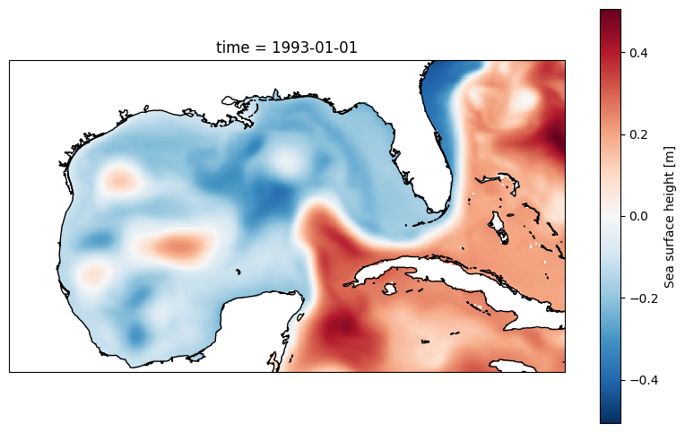
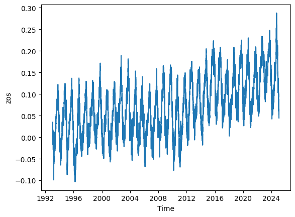
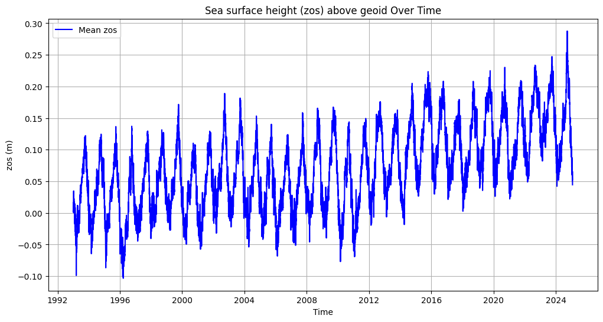
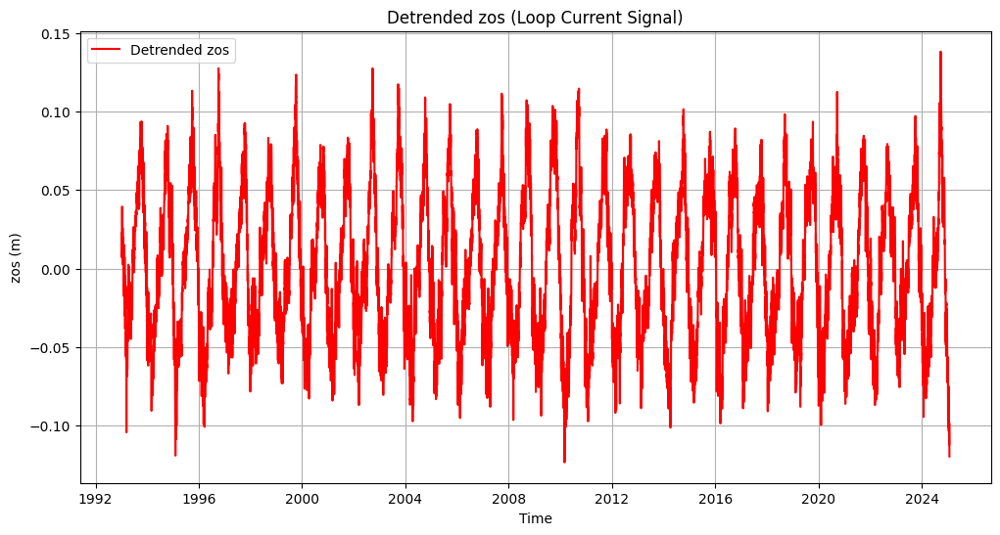

Sea-surface height and red tides#

import os
import copernicusmarine
import shutil
import xarray as xr
import numpy as np
import pandas as pd
import matplotlib.pyplot as plt
import matplotlib.dates as mdates
import matplotlib.gridspec as gridspec
import cartopy.crs as ccrs
import cartopy.feature as cfeature
import math
from scipy.io import loadmat # this is the SciPy module that loads mat-files
from statsmodels.nonparametric.smoothers_lowess import lowess
#from PyEMD import EMD
import warnings
# Suppress warnings issued by Cartopy when downloading data files
warnings.filterwarnings('ignore')
Going With the Flow: Visualizing Ocean Currents with ECCO
https://science.nasa.gov/earth/oceans/going-with-the-flow-visualizing-ocean-currents-with-ecco/
https://link.springer.com/article/10.1038/s43247-025-02108-4
For publishing do HBMA with zos average, delta, and track 26
1. Problem Statement#
The hypothesis is that high sea-level anomalies in the Gulf of Mexico is a a necessary condition for the occurance of red tides (high concentration of K. brevis cell counts) in the West Florida shielf. High sea-level anomalies is asscoiated with the Gulf Loop Current, which is a warm ocean current that flows from the Caribbean to the Gulf of Mexico, then loops east and south along the Florida coast, and exits through the Straits of Florida. To investigate the relationship between sea level anomalies (SLA) and red tide occurrences (K. brevis cell counts), we you can employ several statistical methods such as time series analysis, regression analysis, event study analysis, spatial correlation analysis and machine learning models. The objective of this exercise is to prepare data for analysis. Specifically, our tasks are to:
download and reduce monthly 3d (x,y, time) SLA data to monthly 2d (x, time) data
download and reduce daily 3d (x,y, time) K. brevis data to weekly 1d (time) data
Redue monthly 2D (x, time) sla data into to weekly 1d (time) data with temporal alignment with K. brevis data
transform weekly 1d SLA and K. brevs data with techniques for stationarity, detrending, zero mean, normalization, etc.
This is all needed so the we you can directly compare SLA data with K. brevis cell count data and perform statstical analysis.
2. Exploring SLA data#
2.1 Download global data (optional)#
From Climate Data Store (CDS) you can download the Sea level gridded data from satellite observations for the global ocean from 1993 to present. You can manually download the data from CDS website or through API. This link contains information on how to use the CDS API and API key. Additional information can be found in this link.
To run the code below, you need first to set the CDS API key.
https://data.marine.copernicus.eu/products
https://data.marine.copernicus.eu/product/GLOBAL_MULTIYEAR_PHY_001_030/description
# Duration configuration (Month, Day)
select_duration=1
duration = ['M', 'D']
zos_folder = f"raw_data/zos_{duration[select_duration]}"
#Download data if does not exit
download_data= False
if download_data:
# Configuration for both time periods and datasets
configs = [
{
'start_datetime': "1993-01-01T00:00:00",
'end_datetime': "2021-06-01T00:00:00",
'dataset_id': f"cmems_mod_glo_phy_my_0.083deg_P1{duration[select_duration]}-m"
},
{
'start_datetime': "2021-07-01T00:00:00",
'end_datetime': "2025-02-01T00:00:00",
'dataset_id': f"cmems_mod_glo_phy_myint_0.083deg_P1{duration[select_duration]}-m"
}
]
# Ensure 'zos' folder exists
if not os.path.exists(zos_folder):
os.makedirs(zos_folder)
# Loop through both configurations and download data
for config in configs:
print(f"Downloading data from {config['start_datetime']} to {config['end_datetime']}...")
output = copernicusmarine.subset(
dataset_id=config['dataset_id'],
dataset_version="202311",
variables=["zos"],
minimum_longitude=-100,
maximum_longitude=-75,
minimum_latitude=18,
maximum_latitude=32,
start_datetime=config['start_datetime'],
end_datetime=config['end_datetime'],
minimum_depth=0.49402499198913574,
maximum_depth=0.49402499198913574,
coordinates_selection_method="strict-inside",
disable_progress_bar=False,
username="aelshall",
password="@lhmedAllah11"
)
# Extract file path from the ResponseSubset object
output_file = output.file_path if hasattr(output, 'file_path') else None
# Move file to zos folder if it exists
if output_file:
destination = os.path.join(zos_folder, os.path.basename(output_file))
shutil.move(output_file, destination)
print(f"File moved to {destination}")
else:
print(f"No file downloaded for {config['start_datetime']} to {config['end_datetime']}. Check dataset settings.")
print("All downloads complete.")
2.2 Select and save Gulf of Mexico data (optional)#
We need to extract the Gulf of Mexico data from this global dataset as follows.
# Read all files
ds = xr.open_mfdataset(f"{zos_folder}/*.nc", combine="by_coords") # , parallel=True
# Display dataset
ds
<xarray.Dataset> Size: 5GB
Dimensions: (time: 11716, latitude: 169, longitude: 301)
Coordinates:
* latitude (latitude) float32 676B 18.0 18.08 18.17 ... 31.83 31.92 32.0
* longitude (longitude) float32 1kB -100.0 -99.92 -99.83 ... -75.08 -75.0
* time (time) datetime64[ns] 94kB 1993-01-01 1993-01-02 ... 2025-01-28
Data variables:
zos (time, latitude, longitude) float64 5GB dask.array<chunksize=(10408, 169, 301), meta=np.ndarray>
Attributes:
title: daily mean fields from Global Ocean Physics An...
comment: CMEMS product
Conventions: CF-1.4
source: MERCATOR GLORYS12V1
institution: MERCATOR OCEAN
history: 2023/06/01 16:20:05 MERCATOR OCEAN Netcdf crea...
references: http://www.mercator-ocean.fr
copernicusmarine_version: 2.0.1# Display 2d data at the first time step
plt.figure(figsize=(10, 6))
ax = plt.axes(projection=ccrs.PlateCarree())
ds.zos[0,:,:].plot()
ax.coastlines();

# Calculate the mean zos across the 'latitude' and 'longitude' dimensions
mean_zos = ds.zos.mean(dim=('latitude', 'longitude')).plot()

# Calculate the mean zos across latitude and longitude
mean_zos = ds.zos.mean(dim=('latitude', 'longitude'))
# Convert to a pandas DataFrame for more flexible plotting
mean_zos_df = mean_zos.to_dataframe().reset_index()
# Plot the data
plt.figure(figsize=(12, 6))
plt.plot(mean_zos_df['time'], mean_zos_df['zos'], label='Mean zos', color='blue')
plt.title('Sea surface height (zos) above geoid Over Time')
plt.xlabel('Time')
plt.ylabel('zos (m)')
plt.legend()
plt.grid(True)
plt.savefig('figures/zos_mean.png')
plt.show()
display(mean_zos_df)

| time | zos | |
|---|---|---|
| 0 | 1993-01-01 | 0.002809 |
| 1 | 1993-01-02 | 0.001144 |
| 2 | 1993-01-03 | 0.016337 |
| 3 | 1993-01-04 | 0.005950 |
| 4 | 1993-01-05 | 0.015159 |
| ... | ... | ... |
| 11711 | 2025-01-24 | 0.051383 |
| 11712 | 2025-01-25 | 0.053326 |
| 11713 | 2025-01-26 | 0.065663 |
| 11714 | 2025-01-27 | 0.045702 |
| 11715 | 2025-01-28 | 0.044567 |
11716 rows × 2 columns
3. Detrending zos data#
# # Extract data
# time = mean_zos_df['time'].values
# signal = mean_zos_df['zos'].values
# # Apply EMD
# emd = EMD()
# IMFs = emd(signal)
# # Plot the first four IMFs in separate subplots
# fig, axs = plt.subplots(4, 1, figsize=(12, 10), sharex=True)
# for i in range(min(4, len(IMFs))):
# axs[i].plot(time, IMFs[i], label=f'IMF {i + 1}')
# axs[i].set_ylabel('zos (m)')
# axs[i].legend(loc='upper right')
# axs[i].grid(True)
# # Set common labels and title
# plt.suptitle('Intrinsic Mode Functions (IMFs) of zos', fontsize=16)
# axs[-1].set_xlabel('Time')
# plt.tight_layout(rect=[0, 0, 1, 0.96]) # Adjust spacing to fit the title
# plt
# plt.show()
# Apply LOWESS to remove slow background trend
filtered = lowess(mean_zos_df['zos'], mean_zos_df['time'], frac=0.05)
# Subtract trend
mean_zos_df['detrended_zos'] = mean_zos_df['zos'] - filtered[:, 1]
# Plot detrended data
plt.figure(figsize=(12, 6))
plt.plot(mean_zos_df['time'], mean_zos_df['detrended_zos'], label='Detrended zos', color='red')
plt.title('Detrended zos (Loop Current Signal)')
plt.xlabel('Time')
plt.ylabel('zos (m)')
plt.legend()
plt.grid(True)
plt.show()

mean_zos_df
| time | zos | detrended_zos | |
|---|---|---|---|
| 0 | 1993-01-01 | 0.002809 | 0.009426 |
| 1 | 1993-01-02 | 0.001144 | 0.007580 |
| 2 | 1993-01-03 | 0.016337 | 0.022593 |
| 3 | 1993-01-04 | 0.005950 | 0.012026 |
| 4 | 1993-01-05 | 0.015159 | 0.021055 |
| ... | ... | ... | ... |
| 11711 | 2025-01-24 | 0.051383 | -0.112541 |
| 11712 | 2025-01-25 | 0.053326 | -0.110714 |
| 11713 | 2025-01-26 | 0.065663 | -0.098493 |
| 11714 | 2025-01-27 | 0.045702 | -0.118568 |
| 11715 | 2025-01-28 | 0.044567 | -0.119818 |
11716 rows × 3 columns